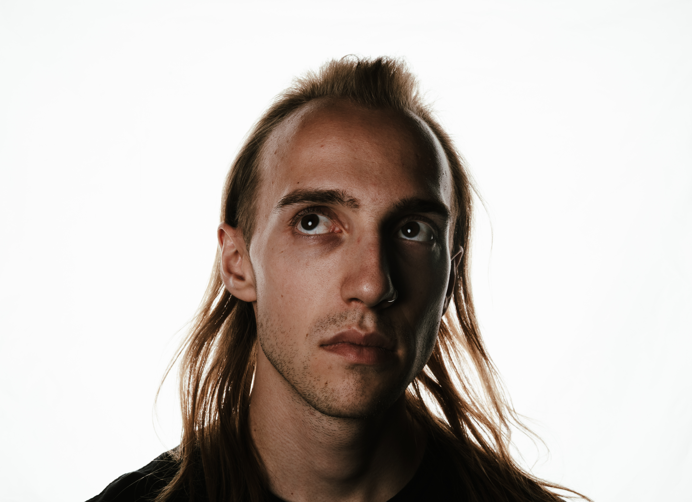
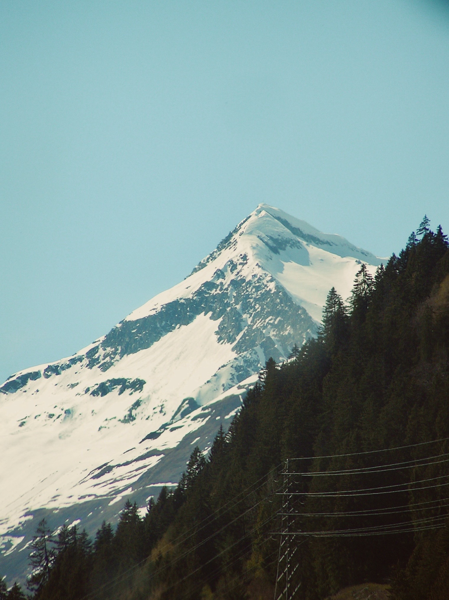

01PORTRAITSHOOTINGopen project ↗
selected work

01PORTRAIT 02FLYER
02FLYER
04PHOTOabout me / bern
Ich bin Simeon Staffelbach, 15 Jahre alt, komme aus Bern und mache eine Lehre als Mediamatiker. Ich spezialisiere mich auf Videografie, Fotografie und Digital Art.
Die kreative Arbeit mit digitalen Medien begleitet mich schon seit meiner Kindheit. Durch meine Lehre kann ich meine Interessen verbinden, eigene Ideen entwickeln und immer wieder Neues lernen.
Meine Stärken: Teamarbeit, Zielstrebigkeit, Selbstständigkeit und Kreativität.
get in touch ↗03 / get in touch
bern — anywhere